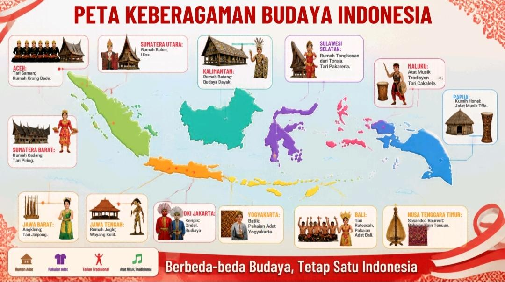

Kenali kekayaan budaya Indonesia melalui peta interaktif. Jelajahi rumah adat, pakaian adat, tarian tradisional, dan alat musik dari berbagai daerah.
Mulai Menjelajah →Klik nama wilayah pada peta untuk melihat kekayaan budayanya.

✦ Pilih salah satu wilayah untuk melihat informasi budaya.
Pilih wilayah yang ingin kamu pelajari.
Kenali, hargai, dan lestarikan keberagaman budaya Indonesia.